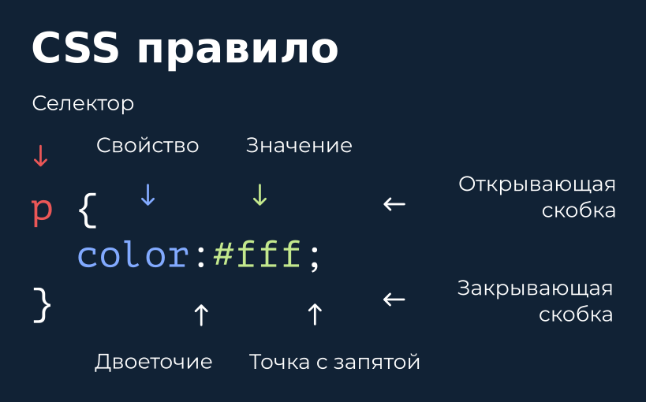
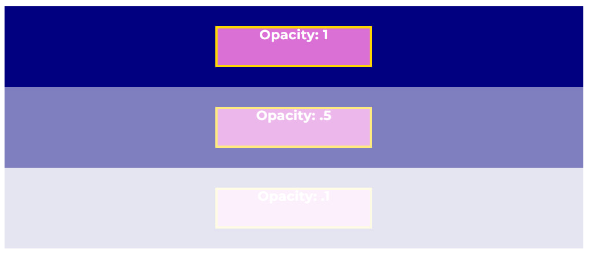

Теория к заданию
Внешние CSS файлы подключаются к странице в теге head, используя тег link.
<!DOCTYPE html>
<html lang="en">
<head> <meta charset="UTF-8">
<meta
name="viewport" content="width=device-width,
initial-scale=1.0">
<title>Document</title>
</head>
<body>
</body>
</html>
Задание
Напишите элемент link для подключения внешнего файла
- который ищет внешний файл с помощью атрибута href по относительному пути css/styles.css;
- содержит атрибут rel со значением stylesheet.
Теория к заданию
Внимание Всегда добавляйте точку с запятой во всех CSS правилах, даже если синтаксис позволяет не добавлять ';' для последнего правила.
Задание
Для селектора P задайте свойство color и значение red, свойство font-size и значение 20px;
<p>В браузере по умолчанию цвет текста черный</p>
<p>В браузере по умолчанию размер шрифта 16px</p>
Теория к заданию
Многие элементы (заголовки к примеру) имеют установленные браузером margin и padding. Удобно производить сброс этих значений до 0. Для этой цели подходит селектор с наименьшим приоритетом и одновременно такой, что задает правила для всех элементов (исключая псевдоэлементы, но об этом позже). Такой селектор задается символом * - т.е. любой элемент. Приоритет у такого селектора минимальный (без ранга).
Если значение какого-либо свойства равно 0, то указывать единицу измерения, вроде `px` не обязательно и даже нежелательно.
Задание
Для селектора * (любой элемент) задай свойство margin и значение 0, свойство padding и значение 0;
<ul>
<li>По умолчанию многие элементы (например заголовки) могут
иметь значения `margin` отличные от `0`</li>
<li>По умолчанию у списка `padding-left` равен `40px`</li>
</ul>
Теория к заданию
Приоритет 4-го ранга минимальный (но он выше селектора без ранга). 4-й ранг принадлежит селекторам элемента и псевдоэлемента (что это - узнаем позднее).
Селектор тега использовать нежелательно. Подходящим случаем для выбора тега в качестве селектора является необходимость отмены или обнуления стилей внутри документа.
Задание
Для тега li отмени свойство list-style с помощью значения none. Задай свойству color значение green; Убедись на примере изменения цвета текста, что у тега более высокий приоритет, чем у *.
<ol>
<li>У списка можно отменить оформление по умолчанию</li>
<li>У списка можно отменить оформление по умолчанию</li>
</ol>
<ul>
<li>У списка можно отменить оформление по
умолчанию</li>
<li>У списка можно отменить оформление по
умолчанию</li>
</ul>
Теория к заданию
Приоритет 3-го ранга выше приоритета 4-го ранга. 3-й ранг принадлежит селекторам класса и псевдокласса (что это - узнаем позднее).
Задание
Для класса rule задай свойство list-style и значение upper-roman, свойство color и значение navy; Убедись на примере появления римской нумерации и изменения цвета текста, что у класса более высокий приоритет, чем у тега.
<ol class="rules">
<li class="rule">Класс - основной селектор для
оформления стилей</li>
<li class="rule">У
класса более высокий приоритет, чем у тега</li>
<li
class="rule">Избегай по возможности сложных селекторов,
например сочетания тега и класса</li>
<li
class="rule">Лучший селектор - это один класс. Но это не
всегда возможно.</li>
</ol>
Теория к заданию
Если у элементов есть общие и уникальные правила, то лучшей практикой является создавать для общих правил один отдельный класс и несколько классов для уникальных правил. Подход объединения общего и отделение уникального позволяет избегать повторения кода, что в компьютерных науках называют принципом DRY (don't repeat yourself) - не повторяй свой код. Это один из самых важных принципов для написания простого, понятного и легко поддерживаемого кода, с минимальным количеством ошибок. Его можно применять не только к CSS и классам, но и в большинстве языков программирования, например в JavaScript.
Задание
-
Двум элементам с классом common-rule добавлены классы first-rule и last-rule, т.е. создана композиция с классом common-rule.
-
Добавьте CSS правила для класса first-rule и last-rule под текстом с правилом для класса common-rule (почему именно такое расположение будет рассмотрено позже).
-
Для класса first-rule добавьте свойство color и значение red.
-
Для класса last-rule добавьте свойство color и значение green.
<ol class="rules">
<li class="common-rule first-rule">Класс - основной
селектор для оформления стилей</li>
<li class="common-rule ">У класса более высокий
приоритет, чем у тега</li>
<li class="common-rule">Избегай по возможности сложных
селекторов, например сочетания тега и класса</li>
<li class="common-rule last-rule">Лучший селектор -
это один класс. Но это не всегда возможно.</li>
</ol>
Теория к заданию
Если селектор должен выбрать элемент в котором находятся одновременно
два класса, то такой селектор выглядит как запись двух классов подряд
без пробела. "Вес" такого селектора будет выше, чем у селекторов с
одним классом. Чем больше селекторов одного ранга, тем выше
специфичность ("вес селектора"). Из нескольких правил css применится
то правило, у которого специфичность выше.
Полезно
Чем выше специфичность (или "вес") селектора, тем труднее изменить
правило при необходимости. Рост размера селекторов приводит к
трудностям в поддержке из-за лишней сложности. Поэтому нужно
стремиться к заданию минимальной специфичности в виде селектора из
одного класса, насколько это возможно.
Задание
В CSS добавь класс active к селекторам button и link так, чтобы
- правило color: red применилось только к элементу button, содержащему одновременно класс btn и active;
- правило font-weight: 700 применилось только к элементу a, содержащему одновременно класс link и active.
<button class="btn active" type="button">Нет</button>
<a class="link" href="#">Ссылка 1</a>
<a class="link active" href="#">Ссылка 2</a>
Теория к заданию
Если требуется перечислить два разных селектора для одного набора CSS
правил, то используют запятую:
<a class="link" href="#">ссылка</a>
<button class="btn"
type="button">да</button>
.link,
.btn {
color: red;
}
Класс и псевдокласс имеют одинаковую специфичность. Но так, как
псевдокласс, как правило, добавляют к классу, то общий "вес" такого
селектора будет выше (3-й ранг + 3-й ранг = 2 * 3-й ранг), чем у
селекторов с одним классом (1 * 3-й ранг).
Задание
Добавь псевдокласс :hover и :focus так, чтобы для класса link применялось свойство opacity: 1 при наведении курсора или получения фокуса с помощью клавиши tab
<a class="link" href="#">Ссылка 1</a><a class="link" href="#">Ссылка 2</a>
Теория к заданию
Класс и атрибут имеют равный "вес" селектора. В CSS при одинаковой
специфичности (равном "весе" селекторов) применятся то правило,
которое будет написано ниже в тексте (выполнится позже в потоке
выполнения документа). Селектор атрибута должен находиться внутри
квадратных скобок и может содержать название атрибута или название и
значение атрибута.
ПРИМЕР
<a href="#">ссылка</a>
<img src="img.jpg">
[src] {
display: block;
width: 100%;
}
[href="#"] {
color: red;
}
Для повышения специфичности можно записывать составной селектор,
состоящий из класса и атрибута.
ПРИМЕР
<a class="link" href="#">ссылка</a>
.link[href="#"] {
color: red;
}
Задание
- Для селектора в виде атрибута [type] задай свойство color со значением white.
- Повышаем специфичность. Для селектора в виде тега button и атрибута [type="reset"] задай свойство color со значением green
<button class="btn" type="reset">по умолчанию</button>
<button class="btn" type="submit">отправить</button>
<a class="btn" href="./help.html">помощь</a>
Теория к заданию
Символ ^ для выбора тех значений атрибута, которые начинаются с
определенных символов Если требуется выделить атрибут, значение
которого начинается с какого-то символа, то синтаксис такого селектора
содержит ^ перед знаком равно и текст, с которого начинается значение
атрибута Селектор атрибута должен находиться внутри квадратных скобок.
ПРИМЕР
<a class="link" href="./index.html">На
главную страницу</a>
<a class="link" href="#ancor">ссылка на
элемент страницы с заданным id</a>
<section id="ancor">...</section>
/* "#ancor" начинается с "#" */
[href^="#"] {
color: red;
}
Задание
- Для ссылок с атрибутом href, значение которых начинается с ./ задай цвет текста red.
- Для ссылок с атрибутом href, значение которых начинается с https задай цвет текста navy.
- Специфичность селекторов должна быть минимальной.
<ul>
<li>
<a class="link" href="./index.html">На главную</a>
</li>
<li>
<a class="link" href="./about.html">О нас</a>
</li>
<li>
<a class="link" href="./contats.html">Контакты</a> </li>
</ul>
<ul>
<li>
<a class="link" target="_blank" href="https://www.google.com">Google</a>
</li>
<li> <a class="link" target="_blank" href="https://developer.mozilla.org/ru/docs/web/css">MDN + CSS</a>
</li>
<li> <a class="link" target="_blank" href="https://stackoverflow.com/questions/tagged/css">StackOverflow + CSS</a>
</li>
</ul>
Теория к заданию
Символ $ для выбора тех значений атрибута, которые заканчиваются на определенные символы. Если требуется выделить атрибут, значение которого в конце имеет определенный символ (или символы), то синтаксис такого селектора содержит
- $ перед знаком равно
- и текст, который ожидается в конце значения.
Селектор атрибута должен находиться внутри квадратных скобок.
ПРИМЕР<a class="link" href="./index.html">На главную страницу</a>
<a class="link" href="#ancor">ссылка на элемент страницы с заданным id</a>
<section id="ancor">...</section>
/* "#ancor" заканчивается на "cor" */
[href$="cor"] {
color: red;
}
Задание
- Для атрибутов, заканчивающихся на html задай цвет текста green
- Для атрибутов, заканчивающихся на css задай цвет текста orangered.
- Специфичность селекторов должна быть минимальной.
<li>
<a class="link" href="./index.html">На главную</a>
</li>
<li>
<a class="link" href="./about.html">О нас</a>
</li>
<li>
<a class="link" href="./contats.html">Контакты</a>
</li>
</ul>
<ul>
<li>
<a class="link" href="https://www.google.com">Google</a>
</li>
<li>
<a class="link" href="https://developer.mozilla.org/ru/docs/web/css">MDN + CSS</a>
</li>
<li>
<a class="link" href="https://stackoverflow.com/questions/tagged/css">StackOverflow + CSS</a>
</li>
</ul>
Теория к заданию
Символ * для выбора тех значений атрибута, которые включают
определенные символы Если требуется выделить атрибут, в значении
которого включен какой-то текст, то синтаксис такого селектора
содержит * перед знаком равно и сам текст. Селектор атрибута должен
находиться внутри квадратных скобок.
ПРИМЕР
<a class="link" href="./index.html">На
главную страницу</a>
<a class="link" href="#introduction">ссылка
на элемент страницы с заданным id</a>
<a
class="link" href="#article">ссылка на элемент
страницы с заданным id</a>
<section id="introduction">...</section>
<section id="article">...</section>
/* "in" содержится в "./index.html" и в
"#introduction", но не в "#article" */
[href*="in"] {
color: red;
}
Задание
- Для атрибутов, содержащих about задай цвет текста green.
- Для атрибутов, содержащих com задай цвет текста orangered.
- Специфичность селекторов должна быть минимальной.
<li>
<a class="link" href="./index.html">На главную</a>
</li>
<li>
<a class="link" href="./about-book.html">О книге</a>
</li>
<li>
<a class="link" href="./about-author.html">Об авторе</a>
</li>
</ul>
<ul>
<li>
<a class="link" href="https://www.google.com/">Google</a>
</li>
<li>
<a class="link" href="https://developer.mozilla.org/ru/docs/web/css">MDN + CSS</a>
</li>
<li>
<a class="link" href="https://stackoverflow.com/questions/tagged/css">StackOverflow + CSS</a>
</li>
</ul>
Теория к заданию
Приоритет 2-го ранга выше приоритета 3-го ранга. Такой селектор нежелательно использовать для создания CSS правил из-за того что стили задаются классами, т.е. селекторами 3-го ранга, а 2-й ранг переопределит стили без возможности изменить любым количеством селекторов 3-го ранга (т.е. даже композиция из 64 тысяч классов не изменит значения у id селектора ). id активно применяются в html формах, в JS и т.п., но использование селектора id в css правилах является плохой практикой из-за более высокого приоритета этого селектора по сравнению с классом.
Задание
Добавь CSS правило с id селектором sending со свойством background-color и значением teal, со свойством color и значением white. Обрати внимание на то что у id более высокий приоритет, чем у класса.
<div class="warning" id="sending">Использование id в качестве селектора в большинстве случаев является плохой практикой. Потому что приводят к дублированию кода и, как следствие, к излишней сложности кода.</div>Теория к заданию
Приоритет 1-го ранга выше приоритета 2-го ранга. 1-й ранг принадлежит
селекторам атрибута style внутри html элемента. Обратите внимание что
атрибут class имеет 3-й ранг, а атрибут id - 2-й ранг.
Атрибут style как правило используется в JavaScript, наравне с
использованием стилей через добавлением или удалением классов.
Предпочтительно стили задавать через классы, т.к. это упрощает разработку и поддержку веб-приложения.
Задание
Задайте элементу div инлайн стили CSS со свойством background-color и
значением orange, со свойством color и значением navy.
Обратите внимание на более высокий приоритет у инлайн-стилей по
сравнению с классом и id.
Инлайн стили нежелательно использовать из-за более высокого приоритета чем у id, а также из-за сложности c поддержкой и повторным использованием кода.
</div>
Теория к заданию
Значение !important добавляется после значения css свойства через пробел.
Использование этого способа изменить приоритет является плохим тоном и не рекомендуется к применению. В данном задании мы знакомим с этим приемом для понимания самого механизма изменения приоритета.
ПРИМЕР
a {
color: red !important;
}
<div style="color: navy !important;">
Это css свойство невозможно ничем переопределить, т.к. сочетание
инлайн и `!important` создают высший приоритет. Не используйте такой
способ!
</div>
Расчет приоритета при применении значения !important происходит так,
словно рангу селектора добавилось еще 4-ре ранга с более высоким
приоритетом. Что-то вроде добавления приставки 0.
Задание
Добавь !important обеим значениям свойств селектора div. Обрати внимание на то что у div приоритет изменился и стал более высоким чем у инлайн.
<div class="warning" id="inline" style="background-color: orange; color: navy;">Использование !important крайне нежелательно. Этот способ повысить приоритет до неизменяемого применяют обычно только для оформления предупреждений или сообщений об ошибках приложения.
</div>
Теория к заданию
Прямой потомок элемента в селекторе задается с помощью символа >
ПРИМЕР<section>
<div>
<h4>Заголовок</h4>
</div>
</section>
section > div {}
div > h4 {}
Задание
Добавь к селектору menu-item еще один класс menu так, чтобы оба свойства display и vertical-align применились только к прямым потомкам класса menu, но не к потомкам sub-menu.
<ul class="menu"><li class="menu-item">
<a href="#" class="menu-link">Меню 1</a>
</li>
<li class="menu-item">
<ul class="sub-menu">
<li class="menu-item">
<a href="#" class="menu-link">Sub Меню 1</a>
</li>
<li class="menu-item">
<a href="#" class="menu-link">Sub Меню 2</a>
</li>
<li class="menu-item">
<a href="#" class="menu-link">Sub Меню 3</a>
</li>
</ul>
<a href="#" class="menu-link">Меню 2</a>
</li>
<li class="menu-item">
<a href="#" class="menu-link">Меню 3</a>
</li>
</ul>
Теория к заданию
Любой потомок элемента в селекторе задается с помощью пробела между селектором элемента и его потомками любого уровня вложенности. Первый потомок элемента задается символом > между селектором элемента и селектором потомка.
ПРИМЕР
<section>
<div class="first">
<h4>Заголовок</h4>
<div> Непрямой потомок section</div>
</div>
<div class="first">1</div>
</section>
Любой потомок для элемента section это все div и h4:
section div {}section h4 {}
Первый потомок для элемента section это div с классом first:
section > div {}Задание
В html коде дано меню, которое содержит два подменю, вложенных одно в другое. В css кода все подменю с классом sub-menu скрыты с помощью свойства opacity. Необходимо разместить элементы li списка с классом menu по горизонтали, а li списков с классом sub-menu должны остаться в вертикальном положении. Также при наведении курсором на элемент li должно показываться скрытое меню. Для этого
- Добавь к селектору menu все элементы с селектором класса menu-item, которые являются первыми потомками списка с классом menu.
- Добавь к селектору sub-menu все элементы с селектором класса menu-item, которые являются потомками списка с классом sub-menu на любом уровне вложенности.
- Добавь к селектору menu-item:hover все элементы, которые являются потомками элемента с классом menu-item на любом уровне вложенности.
Обрати внимание на поведение элементов меню при hover до и после успешного выполнения задания.
<ul class="menu"><li class="menu-item">
<a href="#" class="menu-link">Меню 1</a>
</li>
<li class="menu-item">
<a href="#" class="menu-link">Меню 2 ▼</a>
<ul class="sub-menu">
<li class="menu-item">
<a href="#" class="menu-link">Sub Меню 1</a>
</li>
<li class="menu-item">
<a href="#" class="menu-link">Sub Меню 2 ▼</a>
<ul class="sub-menu">
<li class="menu-item">
<a href="#" class="menu-link">Sub Меню 1</a>
</li>
<li class="menu-item">
<a href="#" class="menu-link">Sub Меню 2</a>
</li>
<li class="menu-item">
<a href="#" class="menu-link">Sub Меню 3</a>
</li>
</ul>
</li>
<li class="menu-item">
<a href="#" class="menu-link">Sub Меню 3</a>
</li>
<li class="menu-item">
<a href="#" class="menu-link">Sub Меню 4</a>
</li>
</ul>
</li>
<li class="menu-item">
<a href="#" class="menu-link">Меню 3</a>
</li>
</ul>
Теория к заданию
Отсчет соседства связан с потоком выполнения - т.е. началом отсчета соседства считается элемент, который написан и прочитан браузером первым. Первый сосед в селекторе задается с помощью символа + Примеры с объяснением какой элемент является первым соседом.
ПРИМЕР<section class="first">
Элемент
</section>
<section class="first-neighbor">
1-й сосед
</section>
<section class="second-neighbor">
2-й сосед
</section>
<section class="third-neighbor">
3-й сосед
</section>
Запишем селектор соседства для элемента section с классом first так, чтобы был выбран элемент с классом first-neighbor
.first + section {color: red;}
Задание
Добавь к селектору item-1 еще один класс item так, чтобы свойство color: red применилось только к первому соседу - элементу с классом item-2
<ul class="items"><li class="item item-1">1-й сосед</li>
<li class="item item-2">2-й сосед</li>
<li class="item item-3">3-й сосед</li>
<li class="item item-4">4-й сосед</li>
</ul>
Теория к заданию
Отсчет соседства связан с потоком выполнения - т.е. соседними элементами считаются все элементы, написанные в коде после заданного селектором и имеющие общего прямого родителя. Любой нижний сосед для селектора задается с помощью символа ~ Примеры с объяснением какой элемент является первым соседом.
ПРИМЕР<section class="zero">сосед сверху</section>
<section class="first">Элемент</section>
<section class="first-neighbor">1-й сосед</section>
<section class="second-neighbor">2-й сосед</section>
<section class="third-neighbor">3-й сосед</section>
Запишем селектор соседства для класса first так, чтобы был выбран элемент с классами first-neighbor, second-neighbor и third-neighbor:
.first ~ section {color: red;
}
Задание
Добавь к селектору item-2 еще один класс item так, чтобы свойство color со значением red применилось ко всем нижним соседям этого элемента. Т.е. правило должно примениться к элементам с классом item-3 и item-4. Ни к каким другим элементам color: red больше применяться не должно.
<ul class="items"><li class="item item-1">1-й сосед</li>
<li class="item item-2">2-й сосед</li>
<li class="item item-3">3-й сосед</li>
<li class="item item-4">4-й сосед</li>
</ul>
Теория к заданию
Если есть свойство, для которого записано несколько CSS правил с селекторами одинакового "веса", то значения будут перезаписаны и в итоге применится значение из написанного последним CSS правила.
Задание
Не меняя селекторы и правила CSS сделай так, чтобы цвет текста всех элементов стал maroon (перемести CSS правила).
<h4 class="title headline" title="1">1</h4><h4 class="title headline" title="2">2</h4>
<h4 class="title headline" title="3">3</h4>
Теория к заданию
Некоторые свойства CSS могут передавать значение элементам html, являющимися потомками элемента выделенного селектором. Например цвет текста - наследуется (за некоторыми исключениями, одному из которых посвящено следующее задание ).
Задание
В коде html есть элемент ul с классом cards и есть последний элемент li с классом last-of-type. С помощью наследования нужно изменить цвет текста для элементов-потомков этих двух элементов. Для этого необходимо:
- селектору класса cards задать цвет текста navy;
- селектору класса last-of-type задать цвет текста firebrick.
<li class="card">
<h4 class="card-title">Заголовок карточки 1</h4>
<p class="card-description">
Текст - описание для карточки 1.
</p>
</li>
<li class="card">
<h4 class="card-title">Заголовок карточки 2</h4>
<p class="card-description">
Текст - описание для карточки 2.
</p>
</li>
<li class="card last-of-type">
<h4 class="card-title">Заголовок карточки 3</h4>
<p class="card-description">
Текст - описание для карточки 3.
</p>
</li>
</ul>
Теория к заданию
Цвет текста для ссылок не наследуется. Если свойство не наследуется, то такое свойство для элемента надо задать отдельно.
Задание
Т.к. цвет текста для ссылок не наследуется, то задай ссылке цвет green, используя класс в качестве селектора
<ul class="list"><li class="list-item">По умолчанию в браузере цвет текста - черный</li>
<li class="list-item"><a class="list-link" href="#">По умолчанию в браузере цвет ссылки - синий с подчеркиванием</a></li>
<li class="list-item">По умолчанию у списка `padding-left` равен `40px`</li>
</ul>
Теория к заданию
Т.к. правила CSS с равными селекторами, но записанными в тексте последними, перезапишут предыдущие значения для одинаковых свойств, то порядок подключения файлов CSS имеет значение. Файл modern-normalize переопределяет некоторые стили браузера для удобства работы.
Задание
Подключите в правильном порядке файлы стилей, расположенных в папке css:
- css/modern-normalize.css
- css/style.css
<head>
<meta charset="UTF-8">
<meta name="viewport" content="width=device-width, initial-scale=1.0">
<title>Document</title>
<!-- Пишите ваш код ниже -->
<!-- Пишите ваш код выше -->
</head>
<body>
</body>
</html>
Теория к заданию
Цвет текста задается свойством color Цвет фона задается свойством background-color Значением этого свойства может быть запись в 4-х форматах
- именованные цвета (black, white и т.д)
- rgb цвета (rgb(0,0,0), rgb(255,255,255) или rgb(100%,100%,100%) и т.д)
- hex цвета (#000 или #000000, #fff или #ffffff и т.д)
- hsl цвета (hsl(0,0%,0%), hsl(0,0%,100%) и т.д)
Именованные цвета не рекомендуется использовать из-за более долгой обработки такой записи браузером, но они очень удобны для демонстрации примеров работы CSS. Формат rgb наиболее интуитивно понятен, и его чаще используют при копировании цвета из макета. Формат hex занимает меньше места и его используют с целью сокращения объема файла. Формат hsl удобен для получения оттенков цвета и его используют для создания палитр, теней и т.п. В rgb используется три цвета: r - red, g - green, b - blue. Все три цвета можно задать числами в диапазоне
- от 0 до 255
- от 0% до 100%
Именованный цвет green не совпадает с максимальным значением зеленого цвета в `rgb`, `hex` или `hsl` формате
Задание
В формате rgb, используя только значения от 0 до 255:
- задай классу box белый цвет текста и черный фон
- задай классу red максимально красный фон
- задай классу green максимально зеленый фон
- задай классу blue максимально синий фон
<div class="box red">Белый текст на красном фоне.</div>
<div class="box green">Белый текст на зеленом фоне.</div>
<div class="box blue">Белый текст на синем фоне.</div>
Теория к заданию
Цвета в hex формате задаются с помощью символа # и перечислением значений цветов по порядку - красный, зеленый, синий. Значения записываются в 16-ричном формате. Все три цвета можно задать числами в диапазоне от 0 до ff (ff это 255 в 16-ричной системе счисления). Всего получается 7 символов, включая #:
a {color: #11aabb}Если все три цвета состоят из одинаковых символов, то рекомендуется сократить запись - по одному символу на один цвет:
/* тот же цвет в сокращенной записи*/a {color: #1ab}
Задание
В сокращенном hex формате
- задай классу box белый цвет текста и черный фон;
- задай классу red максимально красный фон;
- задай классу green максимально зеленый фон;
- задай классу blue максимально синий фон.
<div class="box red">Белый текст на красном фоне.</div>
<div class="box green">Белый текст на зеленом фоне.</div>
<div class="box blue">Белый текст на синем фоне.</div>
Теория к заданию
Цвет hsl имеет необычные параметры, но достаточно научиться управлять третьим параметром lightness или яркостью, чтобы получать более темные или светлые оттенки выбранного цвета и при этом всегда попадать в правильный тон, гармонично сочетающийся с исходным цветом. Это может понадобится для ситуации, когда hover не прорисован для всех цветов темы. В таких случаях достаточно перевести цвет в формат hsl и изменить lightness на 10% или более процентов. При смене темы стоит уделять внимание контрастности цвета фона и цвета текста - если фон темный, то надо подбирать светлый цвет для текста и наоборот. Текст без коррекции контраста с фоном:

Текст после коррекции контраста с фоном:

Задание
Сделай цвет текста контрастным - добавь белый цвет в формате hsl для классов lightness-25 и lightness-0
<h2>h. s. lightness</h2><div class="lightness lightness-100">100%</div>
<div class="lightness lightness-75">75%</div>
<div class="lightness lightness-50">50%</div>
<div class="lightness lightness-25">25%</div>
<div class="lightness lightness-0">0</div>
Теория к заданию
Отличие между свойством opacity и цветом прозрачности transparent: Пример наследования opacity
- opacity меняет прозрачность всех свойств элемента, связанных с цветом, а также прозрачность потомков элементов. Это ограничивает возможность применения свойства.
- transparent это название цвета 'прозрачный', подобно названию белый - white или черный - black. Поэтому такое название можно применять для цвета текста, фона и т.п.
Пример наследования opacity
Задание
- Задай свойство opacity селекторам .opacity:hover и .opacity:focus так, чтобы прозрачность отсутствовала.
- Задай свойству background-color селекторам .transparent:hover и .transparent:focus значение - именованный цвет прозрачности.
<div class="box opacity">Opacity</div>
<div class="box transparent">Transparent</div>
</div>
Теория к заданию
Чтобы получить удобство opacity в получении градаций прозрачности, но иметь возможность применять прозрачность только к определенному цвету используют альфа-канал. Это особый синтаксис для знакомой записи цвета в форматах rgb, hsl и hex. В предыдущем примере мы выяснили, что недостаток transparency - отсутствие градаций, а недостаток opacity - неизбирательность (применятся ко всем цветам). Чтобы избавиться от этих недостатков к форматам rgb, hsl и hex можно добавить 4-е значение - прозрачность или по другому - альфа-канал. Синтаксис записи цвета с альфа-каналом:
- rgba: rgba(Red,Green,Blue, Alfa), где значения Alfa меняется как у свойства opacity, т.е. от 0 до 1 с помощью дробных чисел. Например .5 - полупрозрачность.
- hsla: hsla(Color, Saturation, Lightness, Alfa), где значения Alfa меняется как у свойства opacity, т.е. от 0 до 1 с помощью дробных чисел. Например .5 - полупрозрачность.
- hexa: #RRGGBBAA, где AA - значения Alfa. Это меняется как у opacity , но в 16-ричном формате. Т.е. от 0 до FF. Например .5 = 80.
Задание
- Задай свойству background-color селектору [data-color="rgba"]:hover значение - полупрозрачный цвет в формате rgba вместо заданного в формате rgb.
- Задай свойству background-color селектору [data-color="hsla"]:hover значение - полупрозрачный цвет в формате hsla вместо заданного в формате hsl.
- Задай свойству background-color селектору [data-color="hexa"]:hover значение - полупрозрачный цвет в формате hexa вместо заданного в формате hex.
<button data-color="hsla">hsla</button>
<button data-color="hexa">hexa</button>